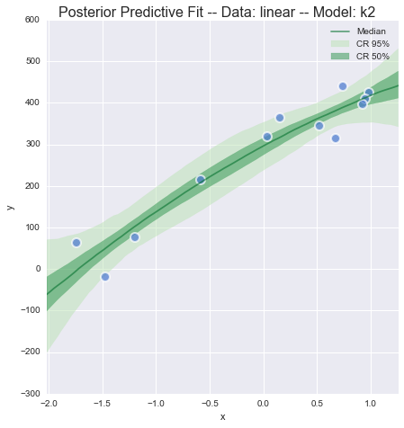
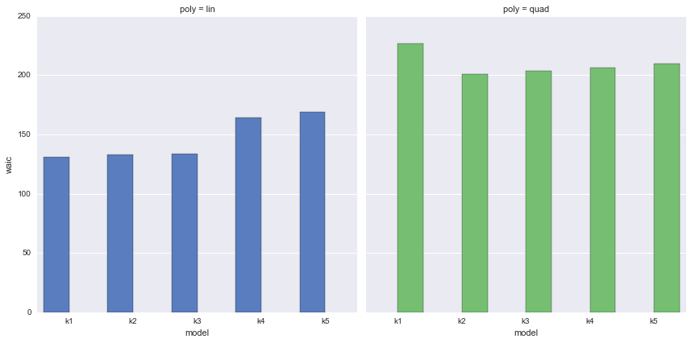

PyMC3 Examples
GLM Model Selection
A fairly minimal reproducable example of Model Selection using DIC and WAIC.
- This example creates two toy datasets under linear and quadratic models, and then tests the fit of a range of polynomial linear models upon those datasets by using the Deviance Information Criterion (DIC) and Watanabe - Akaike (or Widest Available) Information Criterion (WAIC).
- DIC (
stats.dic) and WAIC (stats.waic) are new additions to PyMC3, so this example shows their usage in a more concrete fashion, also usage of the newglmsubmodule. - The example was inspired by Jake Vanderplas' recent blogpost on model selection, although in this first iteration, Cross-Validation and Bayes Factor comparison are not implemented.
- The datasets are tiny and generated within this Notebook. They contain errors in the measured value (y) only.
For more information on Model Selection in PyMC3, and about DIC and WAIC, you could start with:
- Thomas Wiecki's detailed response to a question on Cross Validated
- The Deviance Information Criterion: 12 Years On (Speigelhalter et al 2014)
- A Widely Applicable Bayesian Information Criterion (Watanabe 2013)
- Efficient Implementation of Leave-One-Out Cross-Validation and WAIC for Evaluating Fitted Bayesian Models (Gelman et al 2015)
Contents
- Setup
- Generate Toy Datasets
- Demonstrate Simple Linear Model
- Create Higher-Order Linear Models
- Compare Deviance Information Criterion (DIC)
- Compare Watanabe-Akaike Information Criterion (WAIC)
Note:
- Python 3.4 project using latest available PyMC3
- Developed using ContinuumIO Anaconda distribution on a Macbook Pro 3GHz i7, 16GB RAM, OSX 10.10.5.
- Finally, if runs become unstable or Theano throws weird errors, try clearing the cache
$> theano-cache clearand rerunning the notebook.
Package Requirements (shown as a conda-env YAML):
$> less conda_env_pymc3_examples.yml
name: pymc3_examples
channels:
- defaults
dependencies:
- python=3.4
- ipython
- ipython-notebook
- ipython-qtconsole
- numpy
- scipy
- matplotlib
- pandas
- seaborn
- patsy
- pip
$> conda env create --file conda_env_pymc3_examples.yml
$> source activate pymc3_examples
$> pip install --process-dependency-links git+https://github.com/pymc-devs/pymc3
Setup
%matplotlib inline
%qtconsole --colors=linux
import warnings
warnings.filterwarnings('ignore')
from collections import OrderedDict
from time import time
import numpy as np
import pandas as pd
import matplotlib.pyplot as plt
import seaborn as sns
from scipy.optimize import fmin_powell
from scipy import integrate
import pymc3 as pm
import theano as thno
import theano.tensor as T
from IPython.html.widgets import interactive, fixed
# configure some basic options
sns.set(style="darkgrid", palette="muted")
pd.set_option('display.notebook_repr_html', True)
plt.rcParams['figure.figsize'] = 12, 8
rndst = np.random.RandomState(0)
Local Functions
def generate_data(n=20, p=0, a=1, b=1, c=0, latent_sigma_y=20):
'''
Create a toy dataset based on a very simple model that we might
imagine is a noisy physical process:
1. random x values within a range
2. latent error aka inherent noise in y
3. optionally create labelled outliers with larger noise
Model form: y ~ a + bx + cx^2 + e
NOTE: latent_sigma_y is used to create a normally distributed,
'latent error' aka 'inherent noise' in the 'physical process'
generating thses values, rather than experimental measurement error.
Please don't use the returned `latent_error` values in inferential
models, it's returned in e dataframe for interest only.
'''
df = pd.DataFrame({'x':rndst.choice(np.arange(100),n,replace=False)})
## create linear or quadratic model
df['y'] = a + b*(df['x']) + c*(df['x'])**2
## create latent noise and marked outliers
df['latent_error'] = rndst.normal(0,latent_sigma_y,n)
df['outlier_error'] = rndst.normal(0,latent_sigma_y*10,n)
df['outlier'] = rndst.binomial(1,p,n)
## add noise, with extreme noise for marked outliers
df['y'] += ((1-df['outlier']) * df['latent_error'])
df['y'] += (df['outlier'] * df['outlier_error'])
## round
for col in ['y','latent_error','outlier_error','x']:
df[col] = np.round(df[col],3)
## add label
df['source'] = 'linear' if c == 0 else 'quadratic'
## create simple linspace for plotting true model
plotx = np.linspace(df['x'].min() - np.ptp(df['x'])*.1
,df['x'].max() + np.ptp(df['x'])*.1, 100)
ploty = a + b*plotx + c*plotx**2
dfp = pd.DataFrame({'x':plotx, 'y':ploty})
return df, dfp
def interact_dataset(n=20, p=0, a=-30, b=5, c=0, latent_sigma_y=20):
'''
Convenience function:
Interactively generate dataset and plot
'''
df, dfp = generate_data(n, p, a, b, c, latent_sigma_y)
g = sns.FacetGrid(df, size=8, hue='outlier', hue_order=[True,False]
,palette=sns.color_palette('Set1'), legend_out=False)
_ = g.map(plt.errorbar, 'x', 'y', 'latent_error', marker="o"
,ms=10, mec='w', mew=2, ls='', elinewidth=0.7).add_legend()
_ = plt.plot(dfp['x'], dfp['y'], '--', alpha=0.8)
plt.subplots_adjust(top=0.92)
_ = g.fig.suptitle('Sketch of Data Generation ({})'.format(df['source'][0])
,fontsize=16)
def plot_datasets(df_lin, df_quad, dfp_lin, dfp_quad):
'''
Convenience function:
Plot the two generated datasets in facets with generative model
'''
df = pd.concat((df_lin, df_quad), axis=0)
dfp_lin, dfp_quad
g = sns.FacetGrid(col='source', hue='source', data=df, size=6
,sharey=False, legend_out=False)
_ = g.map(plt.scatter, 'x', 'y', alpha=0.7, s=100, lw=2, edgecolor='w')
_ = g.axes[0][0].plot(dfp_lin['x'], dfp_lin['y'], '--', alpha=0.6)
_ = g.axes[0][1].plot(dfp_quad['x'], dfp_quad['y'], '--', alpha=0.6)
def plot_traces(traces, retain=1000):
'''
Convenience function:
Plot traces with overlaid means and values
'''
ax = pm.traceplot(traces[-retain:], figsize=(12,len(traces.varnames)*1.5),
lines={k: v['mean'] for k, v in pm.df_summary(traces[-retain:]).iterrows()})
for i, mn in enumerate(pm.df_summary(traces[-retain:])['mean']):
ax[i,0].annotate('{:.2f}'.format(mn), xy=(mn,0), xycoords='data'
,xytext=(5,10), textcoords='offset points', rotation=90
,va='bottom', fontsize='large', color='#AA0022')
def create_poly_modelspec(k=1):
'''
Convenience function:
Create a polynomial modelspec string for patsy
'''
return ('y ~ 1 + x ' + ' '.join(['+ np.power(x,{})'.format(j)
for j in range(2,k+1)])).strip()
def run_models(df, upper_order=5):
'''
Convenience function:
Fit a range of pymc3 models of increasing polynomial complexity.
Suggest limit to max order 5 since calculation time is exponential.
'''
models, traces = OrderedDict(), OrderedDict()
for k in range(1,upper_order+1):
nm = 'k{}'.format(k)
fml = create_poly_modelspec(k)
with pm.Model() as models[nm]:
print('\nRunning: {}'.format(nm))
pm.glm.glm(fml, df, family=pm.glm.families.Normal())
start_MAP = pm.find_MAP(fmin=fmin_powell, disp=False)
traces[nm] = pm.sample(2000, start=start_MAP, step=pm.NUTS(), progressbar=True)
return models, traces
def plot_posterior_cr(models, traces, rawdata, xlims,
datamodelnm='linear', modelnm='k1'):
'''
Convenience function:
Plot posterior predictions with credible regions shown as filled areas.
'''
## Get traces and calc posterior prediction for npoints in x
npoints = 100
mdl = models[modelnm]
trc = pm.trace_to_dataframe(traces[modelnm][-1000:])
trc = trc[[str(v) for v in mdl.cont_vars[:-1]]]
ordr = int(modelnm[-1:])
x = np.linspace(xlims[0], xlims[1], npoints).reshape((npoints,1))
pwrs = np.ones((npoints,ordr+1)) * np.arange(ordr+1)
X = x ** pwrs
cr = np.dot(X,trc.T)
## Calculate credible regions and plot over the datapoints
dfp = pd.DataFrame(np.percentile(cr,[2.5, 25, 50, 75, 97.5], axis=1).T
,columns=['025','250','500','750','975'])
dfp['x'] = x
pal = sns.color_palette('Greens')
f, ax1d = plt.subplots(1,1, figsize=(7,7))
f.suptitle('Posterior Predictive Fit -- Data: {} -- Model: {}'.format(
datamodelnm, modelnm), fontsize=16)
plt.subplots_adjust(top=0.95)
ax1d.fill_between(dfp['x'], dfp['025'], dfp['975'], alpha=0.5
,color=pal[1], label='CR 95%')
ax1d.fill_between(dfp['x'], dfp['250'], dfp['750'], alpha=0.5
,color=pal[4], label='CR 50%')
ax1d.plot(dfp['x'], dfp['500'], alpha=0.6, color=pal[5], label='Median')
_ = plt.legend()
_ = ax1d.set_xlim(xlims)
_ = sns.regplot(x='x', y='y', data=rawdata, fit_reg=False
,scatter_kws={'alpha':0.7,'s':100, 'lw':2,'edgecolor':'w'}, ax=ax1d)
Generate Toy Datasets
Interactively Draft Data
Throughout the rest of the Notebook, we'll use two toy datasets created by a linear and a quadratic model respectively, so that we can better evaluate the fit of the model selection.
Right now, lets use an interactive session to play around with the data generation function in this Notebook, and get a feel for the possibilities of data we could generate.
where:
NOTE on outliers:
- We can use value
pto set the (approximate) proportion of 'outliers' under a bernoulli distribution. - These outliers have a 10x larger
latent_sigma_y - These outliers are labelled in the returned datasets and may be useful for other modelling, see another example Notebook
GLM-robust-with-outlier-detection.ipynb
interactive(interact_dataset, n=[5,50,5], p=[0,.5,.05], a=[-50,50]
,b=[-10,10], c=[-3,3], latent_sigma_y=[0,1000,50])

Observe:
- I've shown the
latent_errorin errorbars, but this is for interest only, since this shows the inherent noise in whatever 'physical process' we imagine created the data. - There is no measurement error.
- Datapoints created as outliers are shown in red, again for interest only.
Create Datasets for Modelling
We can use the above interactive plot to get a feel for the effect of the params. Now we'll create 2 fixed datasets to use for the remainder of the Notebook.
- For a start, we'll create a linear model with small noise. Keep it simple.
- Secondly, a quadratic model with small noise
n = 12
df_lin, dfp_lin = generate_data(n=n, p=0, a=-30, b=5, c=0, latent_sigma_y=40)
df_quad, dfp_quad = generate_data(n=n, p=0, a=-200, b=2, c=3, latent_sigma_y=500)
Scatterplot against model line
plot_datasets(df_lin, df_quad, dfp_lin, dfp_quad)

Observe:
- We now have two datasets
df_linanddf_quadcreated by a linear model and quadratic model respectively. - You can see this raw data, the ideal model fit and the effect of the latent noise in the scatterplots above
- In the folowing plots in this Notebook, the linear-generated data will be shown in Blue and the quadratic in Green.
Standardize
dfs_lin = df_lin.copy()
dfs_lin['x'] = (df_lin['x'] - df_lin['x'].mean()) / df_lin['x'].std()
dfs_quad = df_quad.copy()
dfs_quad['x'] = (df_quad['x'] - df_quad['x'].mean()) / df_quad['x'].std()
Create ranges for later ylim xim
dfs_lin_xlims = (dfs_lin['x'].min() - np.ptp(dfs_lin['x'])/10
,dfs_lin['x'].max() + np.ptp(dfs_lin['x'])/10)
dfs_lin_ylims = (dfs_lin['y'].min() - np.ptp(dfs_lin['y'])/10
,dfs_lin['y'].max() + np.ptp(dfs_lin['y'])/10)
dfs_quad_ylims = (dfs_quad['y'].min() - np.ptp(dfs_quad['y'])/10
,dfs_quad['y'].max() + np.ptp(dfs_quad['y'])/10)
Demonstrate Simple Linear Model
This linear model is really simple and conventional, an OLS with L2 constraints (Ridge Regression):
Define model using ordinary pymc3 method
with pm.Model() as mdl_ols:
## define Normal priors to give Ridge regression
b0 = pm.Normal('b0', mu=0, sd=100)
b1 = pm.Normal('b1', mu=0, sd=100)
## define Linear model
yest = b0 + b1 * df_lin['x']
## define Normal likelihood with HalfCauchy noise (fat tails, equiv to HalfT 1DoF)
sigma_y = pm.HalfCauchy('sigma_y', beta=10)
likelihood = pm.Normal('likelihood', mu=yest, sd=sigma_y, observed=df_lin['y'])
## sample using NUTS (starting from MAP found using powell)
start_MAP = pm.find_MAP(fmin=fmin_powell, disp=True)
traces_ols = pm.sample(2000, start=start_MAP, step=pm.NUTS(), progressbar=True)
Optimization terminated successfully.
Current function value: 75.099693
Iterations: 8
Function evaluations: 303
[-----------------100%-----------------] 2000 of 2000 complete in 2.5 sec
View Traces after burn-in
plot_traces(traces_ols, retain=1000)

Observe:
- This simple OLS manages to make fairly good guesses on the model parameters - the data has been generated fairly simply after all - but it does appear to have been fooled slightly by the inherent noise.
Define model using pymc3 GLM method
PyMC3 has a quite recently developed method - glm - for defining models using a patsy-style formula syntax. This seems really useful, especially for defining simple regression models in fewer lines of code.
I couldn't find a direct comparison in the the examples, so before I launch into using glm for the rest of the Notebook, here's the same OLS model as above, defined using glm.
with pm.Model() as mdl_ols_glm:
# setup model with Normal likelihood (which uses HalfCauchy for error prior)
pm.glm.glm('y ~ 1 + x', df_lin, family=pm.glm.families.Normal())
## sample using NUTS (starting from MAP found using powell)
start_MAP = pm.find_MAP(fmin=fmin_powell, disp=True)
traces_ols_glm = pm.sample(2000, start=start_MAP, step=pm.NUTS(), progressbar=True)
Optimization terminated successfully.
Current function value: 93.518364
Iterations: 7
Function evaluations: 273
[-----------------100%-----------------] 2000 of 2000 complete in 4.7 sec
View Traces after burn-in
plot_traces(traces_ols_glm, retain=1000)

Observe:
-
The output parameters are of course named differently to the custom naming before. Now we have:
b0 == Intercept
b1 == x
sigma_y_log == sd_log
sigma_y == sd -
However, naming aside, this
glm-defined model appears to behave in a very similar way, and finds the same parameter values as the conventionally-defined model - any differences are due to the random nature of the sampling. - We can quite happily use the
glmsyntax for further models below, since it allows us to create a small model factory very easily.
Create Higher-Order Linear Models
Back to the real purpose of this Notebook: demonstrate model selection.
First, let's create and run a set of polynomial models on each of our toy datasets. By default this is for models of order 1 to 5.
Create and run polynomial models
Please see run_models() above for details. Generally, we're creating 5 polynomial models and fitting each to the chosen dataset
models_lin, traces_lin = run_models(dfs_lin, 5)
Running: k1
[-----------------100%-----------------] 2000 of 2000 complete in 2.6 sec
Running: k2
[-----------------100%-----------------] 2000 of 2000 complete in 4.7 sec
Running: k3
[-----------------100%-----------------] 2000 of 2000 complete in 6.3 sec
Running: k4
[-----------------100%-----------------] 2000 of 2000 complete in 13.3 sec
Running: k5
[-----------------100%-----------------] 2000 of 2000 complete in 26.4 sec
models_quad, traces_quad = run_models(dfs_quad, 5)
Running: k1
[-----------------100%-----------------] 2000 of 2000 complete in 36.6 sec
Running: k2
[-----------------100%-----------------] 2000 of 2000 complete in 9.8 sec
Running: k3
[-----------------100%-----------------] 2000 of 2000 complete in 16.6 sec
Running: k4
[-----------------100%-----------------] 2000 of 2000 complete in 64.1 sec
Running: k5
[-----------------100%-----------------] 2000 of 2000 complete in 74.4 sec
A really bad method for model selection: compare likelihoods
Evaluate log likelihoods straight from model.logp
dfll = pd.DataFrame(index=['k1','k2','k3','k4','k5'], columns=['lin','quad'])
dfll.index.name = 'model'
for nm in dfll.index:
dfll.loc[nm,'lin'] =-models_lin[nm].logp(pm.df_summary(traces_lin[nm])['mean'].to_dict())
dfll.loc[nm,'quad'] =-models_quad[nm].logp(pm.df_summary(traces_quad[nm])['mean'].to_dict())
dfll = pd.melt(dfll.reset_index(), id_vars=['model'], var_name='poly'
,value_name='log_likelihood')
Plot log-likelihoods
g = sns.factorplot(x='model', y='log_likelihood', col='poly', hue='poly'
,data=dfll, kind='bar', size=6)

Observe:
- Again we're showing the linear-generated data at left (Blue) and the quadratic-generated data on the right (Green)
- For both datasets, as the models get more complex, the likelhood increases monotonically
- This is expected, since the models are more flexible and thus able to (over)fit more easily.
- This overfitting makes it a terrible idea to simply use the likelihood to evaluate the model fits.
View posterior predictive fit
Just for the linear, generated data, lets take an interactive look at the posterior predictive fit for the models k1 through k5.
As indicated by the likelhood plots above, the higher-order polynomial models exhibit some quite wild swings in the function in order to (over)fit the data
interactive(plot_posterior_cr, models=fixed(models_lin), traces=fixed(traces_lin)
,rawdata=fixed(dfs_lin), xlims=fixed(dfs_lin_xlims), datamodelnm=fixed('linear')
,modelnm = ['k1','k2','k3','k4','k5'])

Compare Deviance Information Criterion [DIC]
The Deviance Information Criterion (DIC) is a fairly unsophisticated method for comparing the deviance of likelhood across the the sample traces of a model run. However, this simplicity apparently yields quite good results in a variety of cases, see the discussion worth reading in (Speigelhalter et al 2014)
DIC has recently been added to PyMC3, so lets see what it tells us about our model fits for both datasets.
Manual calculation, probably error-prone
dftrc_lin = pm.trace_to_dataframe(traces_lin['k1'])
trc_lin_logp = dftrc_lin.apply(lambda x: models_lin['k1'].logp(x.to_dict()), axis=1)
mean_deviance = -2 * trc_lin_logp.mean(0)
mean_deviance
191.16310801115768
deviance_at_mean = -2 * models_lin['k1'].logp(dftrc_lin.mean(0).to_dict())
deviance_at_mean
188.03386766667467
dic_k1 = 2 * mean_deviance - deviance_at_mean
dic_k1
194.29234835564068
Or we could use the newly created function in stats.py, much better!
pm.stats.dic(model=models_lin['k1'], trace=traces_lin['k1'])
194.29234835564063
Observe:
- It's good to see the manual method agrees with the implemented package method
Now loop through all the models and calculate the DIC
dfdic = pd.DataFrame(index=['k1','k2','k3','k4','k5'], columns=['lin','quad'])
dfdic.index.name = 'model'
for nm in dfdic.index:
dfdic.loc[nm, 'lin'] = pm.stats.dic(traces_lin[nm],models_lin[nm])
dfdic.loc[nm, 'quad'] = pm.stats.dic(traces_quad[nm],models_quad[nm])
dfdic = pd.melt(dfdic.reset_index(), id_vars=['model'], var_name='poly', value_name='dic')
g = sns.factorplot(x='model', y='dic', col='poly', hue='poly', data=dfdic, kind='bar', size=6)

Observe
-
We should prefer the model(s) with lower DIC, which (happily) directly opposes the increasing likelihood we see above.
-
Linear-generated data (lhs):
- The DIC increases monotonically with model complexity, this is great too see!
- The more complicated the model, the more it would appear we are overfitting.
-
Quadratic-generated data (rhs):
- The DIC dips slightly for the correct model k2
- The difference is slight though!
Compare Watanabe - Akaike Information Criterion [WAIC]
The Widely Applicable Bayesian Information Criterion (WBIC), a.k.a the Watanabe - Akaike Information Criterion (WAIC) is another simple option for calculating the goodness-of-fit of amodel using numerical techniques. See (Watanabe 2013) for details.
WAIC has also recently been added to PyMC3, so lets see what it tells us about our model fits for both datasets.
This time go straight for the implementation in pymc3
pm.stats.waic(model=models_lin['k1'], trace=traces_lin['k1'])
130.93585669884246
Observe:
- Well, we get a number... not much to tell from just one though, so lets compare all models
Now loop through all the models and calculate the WAIC
dfwaic = pd.DataFrame(index=['k1','k2','k3','k4','k5'], columns=['lin','quad'])
dfwaic.index.name = 'model'
for nm in dfwaic.index:
dfwaic.loc[nm, 'lin'] = pm.stats.waic(traces_lin[nm],models_lin[nm])
dfwaic.loc[nm, 'quad'] = pm.stats.waic(traces_quad[nm],models_quad[nm])
dfwaic = pd.melt(dfwaic.reset_index(), id_vars=['model'], var_name='poly', value_name='waic')
g = sns.factorplot(x='model', y='waic', col='poly', hue='poly', data=dfwaic, kind='bar', size=6)

Observe
-
We should prefer the model(s) with lower WAIC
-
Linear-generated data (lhs):
- The WAIC seems quite flat across models
- The WAIC seems best (lowest) for simpler models, but k1 doesn't stand out as much as it did when using DIC
-
Quadratic-generated data (rhs):
- The WAIC is certainly wrong for k1, but otherwise also quite flat across the models
- There does appear to be a slight dip in the right place at k2
For these particular models and data, I would prefer to use the DIC scores in order to choose models.
TODO
K-Fold Cross Validation and/or Leave-One-Out (LOO)
Left for future development - should be easy enough
http://www.stat.columbia.edu/~gelman/research/unpublished/waic_stan.pdf
Bayes Factor
Will be left for future development - scipy only useful for 2D and 3D. Beyond that, dragons.
Following text lifted directly from JakeVDP blogpost
The Bayesian approach proceeds very differently. Recall that the Bayesian model involves computing the odds ratio between two models:
Here the ratio
The Bayes factor can be computed by evaluating the integral over the parameter likelihood:
This integral is over the entire parameter space of the model, and thus can be extremely computationally intensive, especially as the dimension of the model grows beyond a few.
Example originally contributed by Jonathan Sedar 2016-01-09 github.com/jonsedar